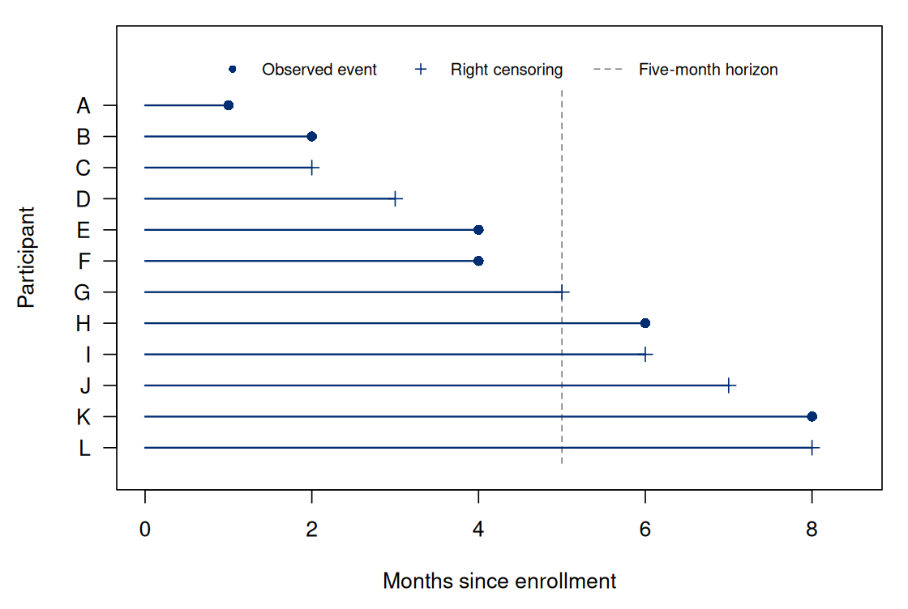

Chapter 1. Events, clocks, and incomplete observation
1.1 From a clinical question to follow-up records
A study follows people after enrollment to learn how long they remain free of a first symptom recurrence, meaning the return of symptoms after an earlier episode. The investigators ask, “What proportion will experience recurrence within five months?” Some participants provide eight months of information; others stop responding earlier. One has a recurrence at month 4. Another is last known to be recurrence-free at month 2. A third is recurrence-free when observation ends at month 7. Those three records contain different information about the five-month question, even if a spreadsheet gives each person just one time and one status code.
Survival analysis starts by separating the event process from the process that reveals it. A person can remain event-free while the study loses the ability to observe them. Conversely, an event may be known to have occurred even when its exact time is unknown. These are properties of observation, not alternative biological outcomes. A valid analysis connects the records to a clearly defined population quantity through stated assumptions.
The twelve-person synthetic cohort below lets us inspect what each record contributes to the five-month recurrence question. We first define its event, clock, and observation rule. Chapter 2 gives names to the population probabilities, and Chapter 3 uses the follow-up times to estimate them. The cohort is a worked example, not evidence for a clinical conclusion.
The first question to ask of any proposed analysis is not whether a distribution looks normal. It is whether the variable being analyzed records the scientific outcome or only a partial observation of that outcome. Skewness can motivate a distributional model, but transforming follow-up times cannot turn a censored record into an observed event time.
1.2 Define an event and a clock together
Let denote time from a specified origin to a specified first event. “Recurrence” needs an operational definition: an adjudicated diagnosis, a laboratory threshold, or a recorded symptom report could produce different event times. “First” also matters. A study of the first recurrence has one event time per person; a study of every recurrence has a sequence of dependent times. Treating repeated events from the same person as unrelated subjects would change both the question and the sampling assumptions.
The time origin should define the population eligible to contribute. Time since diagnosis, time since enrollment, and attained age are all possible clocks, but they are not interchangeable labels. Suppose people enroll two months after diagnosis only if they have remained event-free. An analysis beginning at enrollment describes selected two-month survivors. Moving its time labels back two months does not recover people who had an event before enrollment. The earlier selection remains.
Changing units is different from changing the origin. If measures months and measures years, then (1.1) This conversion changes the numerical scale without changing who is in the population or the event represented. Subject-specific shifts of the origin can alter both eligibility and conditioning. A file should therefore retain the dates needed to reconstruct the chosen clock, not merely a rounded duration whose origin cannot be checked.
In our example, the population consists of participants who are event-free at enrollment, the origin is enrollment, and is time in months to first recurrence. The five-month target is (1.2) These are descriptive probabilities for that population. A comparison of curves across treatment groups would still need additional design and assumptions before it could support a causal treatment claim. For now there are no treatments, covariates, competing terminal events, or repeated recurrences in the target.
1.3 What a right-censored record actually says
Let be the last time at which the event could be ascertained for a person who remained event-free that long. Under right censoring we observe (1.3) Here , , and are scalar random times in the sampling model; is the recorded follow-up value. We reserve for observed follow-up in this book, rather than for a regression design matrix. An event record says . A censored record says . The latter is a lower bound, not a missing value with no information. It establishes survival through but does not reveal what happened later.
We use an event-first convention at equality: an event at the final observable time is recorded as an event. If event and censoring times are continuous, exact equality may have probability zero. Recorded days or months nevertheless create ties between different people. A convention is needed to calculate risk sets from such records; it should be documented rather than determined by whichever row appears first in a file. A risk set is the group under observation and still event-free immediately before an event time; it includes only people who have already entered follow-up.
The status indicator is not generally the same variable as . For a person censored at month 2, the latter is unknown. For a person with an event at month 4 it is one. For a person censored at month 7 it is zero. Even an observed event at month 8 gives a known zero for the five-month target. Its event occurred after the horizon.
This distinction explains why a binary analysis of can miss the scientific target. Its expectation under a common observation scheme is , which depends on follow-up. Extending follow-up could increase the observed event fraction while leaving unchanged. A binary analysis can be appropriate when everyone has fully ascertained five-month status. The problem is equating that status with an indicator defined at variable follow-up times.
1.4 A twelve-person cohort and its logical limits
Table 1.1 is our recurring cohort. The recording unit is the analysis time in months. A status of one denotes an event; zero denotes right censoring. All twelve people enter at time zero.
| Participant | A | B | C | D | E | F | G | H | I | J | K | L |
|---|---|---|---|---|---|---|---|---|---|---|---|---|
| 1 | 2 | 2 | 3 | 4 | 4 | 5 | 6 | 6 | 7 | 8 | 8 | |
| 1 | 1 | 0 | 0 | 1 | 1 | 0 | 1 | 0 | 0 | 1 | 0 |
At five months, A, B, E, and F are known to have had events. G, H, I, J, K, and L are known not to have had an event by that horizon. G is included in the latter group because censoring at month 5 implies under our convention. Only C and D have unknown five-month status. Thus ten of twelve horizon outcomes are known, despite six of twelve event times being censored. The percentage of censored times and the percentage of missing fixed-horizon outcomes measure different things.


Consider the unobserved fraction of these particular twelve people who actually experienced an event by month 5. If neither C nor D did, the fraction is . If both did, it is . Therefore (1.4) These are logical bounds for the realized cohort, not a confidence interval for the population probability . They do not incorporate sampling variation or assert that the population probability lies between them.
Two complete event-time samples demonstrate the ambiguity. Assign every censored person an event at month 9; this gives the lower bound. Alternatively, assign C and D events at month 4.5 and leave the other censored times at 9; this gives the upper bound. Both assignments preserve every observed record: C’s assigned event remains after month 2 and D’s remains after month 3. These constructions are possible completions, not recommended imputations. They show why the records alone do not determine every individual’s future.
Three tempting shortcuts give three different numbers. The proportion with any observed event is . The event fraction among people whose five-month outcome is known is . Counting known events but placing all twelve people in the denominator gives . Each has a different interpretation. None becomes an unbiased estimate of merely because it is easy to calculate. The second selects on observation, and the third treats unknown outcomes as nonevents. Chapter 3 will use the actual time information rather than choosing one of these shortcuts.
1.5 Encode the question in R
The following calculation makes horizon-specific knowledge explicit.
The data frame cohort contains the columns in Table 1.1. An exact event time determines
whether the event falls before the horizon; a right-censored time
determines that outcome only if it reaches the horizon.
Only base R is needed; the block creates the synthetic cohort before computing its horizon-specific outcomes.
Run the chapter examples
Copy the block below into a fresh R session. It creates the synthetic data and prints the chapter calculations, with figures in the R graphics window. Only base R is needed.
Complete R example
# events, clocks and incomplete observation.
# Twelve synthetic participants; time is measured in months.
# status = 1 records an event; status = 0 records right censoring.
# Only base R is needed. No file download or working-directory setup is needed.
cohort <- data.frame(
id = LETTERS[1:12],
time = c(1, 2, 2, 3, 4, 4, 5, 6, 6, 7, 8, 8),
status = c(1, 1, 0, 0, 1, 1, 0, 1, 0, 0, 1, 0)
)
stopifnot(!anyDuplicated(cohort$id), all(cohort$time >= 0),
all(cohort$status %in% c(0, 1)))
# Event status at the fixed five-month horizon is unknown after early censoring.
h <- 5
known <- with(cohort, status == 1 | time >= h)
event.by.h <- with(cohort, as.integer(status == 1 & time <= h))
event.by.h[!known] <- NA_integer_
lower <- sum(event.by.h == 1, na.rm = TRUE) / nrow(cohort)
upper <- lower + sum(!known) / nrow(cohort)
stopifnot(sum(known) == 10, sum(is.na(event.by.h)) == 2,
abs(lower - 1/3) < 1e-12, abs(upper - 1/2) < 1e-12)
cohort$known.at.5 <- known
cohort$event.by.5 <- event.by.h
print(cohort, row.names = FALSE)
# Two compatible futures show logical bounds, not population confidence limits.
event.A <- ifelse(cohort$status == 1, cohort$time, 9)
event.B <- event.A
event.B[cohort$id %in% c("C", "D")] <- 4.5
censor <- ifelse(cohort$status == 0, cohort$time, 10)
for (tt in list(event.A, event.B)) {
stopifnot(identical(pmin(tt, censor), cohort$time),
identical(as.numeric(tt <= censor), as.numeric(cohort$status)))
}
stopifnot(mean(event.A <= h) == lower, mean(event.B <= h) == upper)
summary.table <- data.frame(
calculation = c("Observed event fraction at variable follow-up",
"Complete five-month status only",
"Known events divided by all participants",
"Logical lower bound for realized cohort",
"Logical upper bound for realized cohort"),
value = c(mean(cohort$status), mean(event.by.h, na.rm = TRUE),
lower, lower, upper)
)
print(summary.table, row.names = FALSE)
# Selection changes the marginal risk despite conditional independence given Z.
set.seed(67501)
n.sim <- 200000L
z <- rbinom(n.sim, 1, 0.5)
event <- rbinom(n.sim, 1, ifelse(z == 1, 0.6, 0.1))
observed <- rbinom(n.sim, 1, ifelse(z == 1, 0.5, 1))
target <- 0.5 * 0.6 + 0.5 * 0.1
selected.target <- (0.5 * 0.5 * 0.6 + 0.5 * 1 * 0.1) /
(0.5 * 0.5 + 0.5 * 1)
stopifnot(abs(target - 7/20) < 1e-12,
abs(selected.target - 4/15) < 1e-12)
selection <- data.frame(
quantity = c("Population risk", "Observed-case risk", "Observed high-risk fraction"),
exact = c(target, selected.target, 1/3),
simulated = c(mean(event), mean(event[observed == 1]), mean(z[observed == 1]))
)
print(selection, row.names = FALSE)
# Draw follow-up records without inventing trajectories after censoring.
local({
old <- par(mar = c(4.6, 4.5, 1.0, 1.0), las = 1)
on.exit(par(old))
yy <- rev(seq_len(nrow(cohort)))
plot(NA, xlim = c(0, 8.5), ylim = c(0.2, 14.0),
xlab = "Months since enrollment", ylab = "Participant", yaxt = "n")
axis(2, at = yy, labels = cohort$id)
segments(h, 0.5, h, 12.6, lty = 2, col = "gray50")
segments(0, yy, cohort$time, yy, col = "#002D72", lwd = 1.4)
points(cohort$time, yy, pch = ifelse(cohort$status == 1, 16, 3),
cex = 1.05, col = "#002D72")
legend(4.25, 13.8, c("Observed event", "Right censoring", "Five-month horizon"),
pch = c(16, 3, NA), lty = c(NA, NA, 2),
col = c("#002D72", "#002D72", "gray50"), bty = "n", cex = 0.76,
horiz = TRUE, xjust = 0.5)
})
This excerpt shows a step inside the preceding complete R example; it uses that block’s data and setup.
# events, clocks and incomplete observation.
# Twelve synthetic participants; time is measured in months.
# status = 1 records an event; status = 0 records right censoring.
# Only base R is needed. No file download or working-directory setup is needed.
cohort <- data.frame(
id = LETTERS[1:12],
time = c(1, 2, 2, 3, 4, 4, 5, 6, 6, 7, 8, 8),
status = c(1, 1, 0, 0, 1, 1, 0, 1, 0, 0, 1, 0)
)
stopifnot(!anyDuplicated(cohort$id), all(cohort$time >= 0),
all(cohort$status %in% c(0, 1)))
# Event status at the fixed five-month horizon is unknown after early censoring.
h <- 5
known <- with(cohort, status == 1 | time >= h)
event.by.h <- with(cohort, as.integer(status == 1 & time <= h))
event.by.h[!known] <- NA_integer_
lower <- sum(event.by.h == 1, na.rm = TRUE) / nrow(cohort)
upper <- lower + sum(!known) / nrow(cohort)
stopifnot(sum(known) == 10, sum(is.na(event.by.h)) == 2,
abs(lower - 1/3) < 1e-12, abs(upper - 1/2) < 1e-12)
cohort$known.at.5 <- known
cohort$event.by.5 <- event.by.h
print(cohort, row.names = FALSE)
print(c(lower = lower, upper = upper))
Executed R output
| Calculation | Value |
|---|---|
| Observed event fraction at variable follow-up | 0.500000 |
| Complete five-month status only | 0.400000 |
| Known events divided by all participants | 0.333333 |
| Logical lower bound for realized cohort | 0.333333 |
| Logical upper bound for realized cohort | 0.500000 |
The complete R example creates the cohort and prints these calculations. We check the exact bounds and verify that both logical completions reproduce the same records. These are checks of the observation logic; a generic test that every status lies in would not detect confusion between and a fixed-horizon outcome.
Notice that NA is retained until a specific calculation
states how it is handled. Calling
mean(event.by.h,na.rm=TRUE) reports the mean among observed
horizon outcomes. The software has not justified that selection.
Removing unknown values is an operation on a data set, not a statistical
assumption that makes the remaining records representative.
1.6 Observation schemes that require different analyses
Right censoring is only one way an event time can be incompletely observed. Table 1.2 describes several schemes in terms of the statement the record actually makes. The mathematical inequalities should follow the ascertainment process, including its endpoint conventions.
| Record type | Information | Example |
|---|---|---|
| Exact event | Dated adjudicated recurrence | |
| Right censored | Event-free at final contact | |
| Left censored | Event present at first examination | |
| Interval censored | Absent at one visit, present at next | |
| Delayed entry | Included only if | Enrollment after the time origin |
If an event is found at a month-6 visit after a negative month-3 visit, the time may lie in . Recording it as exactly 6 assigns an event time that was not observed. Similarly, an event already present at enrollment can be left censored if the time origin precedes enrollment. Such a record is not equivalent to someone documented event-free at enrollment and followed prospectively.
Delayed entry, often described as left truncation, concerns selection into observation. A person enrolled at only after surviving event-free until then supplies information conditional on . Under a suitable entry mechanism, the probability of surviving beyond among such entrants is . The missing early failures are absent from the sample, rather than present with a censoring flag. A risk set on the original clock must include a person only after entry; with an interval convention , the indicator is . Independent entry is a separate selection assumption; right-censoring software does not automatically correct an incorrectly specified entry population.
Administrative censoring occurs when observation ends at a prespecified study boundary. Loss to follow-up and withdrawal can end observation sooner. The reason matters because it helps assess the relation between observation and the unobserved event process. A participant who stops attending because symptoms are worsening may differ from someone whose observation ends only because the study closes. Even administrative closure is not automatically independent: enrollment calendar time may be associated with both obtainable follow-up and the event distribution.
1.7 The assumptions that permit a population interpretation
The simple pooled model used in Chapter 3 assumes independent, identically distributed subject-level pairs and marginal independence . This is a sufficient condition, not the only possible formulation of independent censoring. The intuition is that among those still event-free, remaining observable does not further select the distribution of future event times. For with positive conditioning probabilities, (1.5) Independent subjects are a separate assumption from independent censoring. Relatives, clustered recruitment, and repeated event times can introduce between-record dependence even when each person’s censoring mechanism is well understood.
Conditional independence does not imply marginal independence. For a concrete illustration, suppose half the population is in a high-risk stratum with five-month event probability and half is in a low-risk stratum with probability . Outcomes are fully observed for every low-risk person but only half the high-risk people, with observation independent of the outcome within each stratum. Population risk is , whereas risk among those observed is (1.6) The observed group contains only one-third high-risk people. This example can be represented by event times 2 or 6 and censoring times 1 or 8; conditional generation of event and censoring times separately preserves . Ignoring still changes the observed composition. We simulate the same construction in R. The exact calculation above gives a reference against which to judge its sampling variation.
The distinction between these two populations also suggests a repair when is measured. Write when five-month status is observed, let , and let . Conditional independent observation gives (1.7) For the second identity, condition on and event status: the conditional mean of is , so weighting cancels the observation probability. The product is observable even though the event indicator itself is unknown when . These are two ways to organize an analysis: estimate stratum risks and average with baseline population weights, or weight observed outcomes by inverse observation probabilities. Neither approach replaces the need for measured strata, positive observation probabilities, and a justified model for observation. In the twelve-person cohort, censoring is observed continuously rather than through a single ; Chapter 3 uses that richer timing information.
The independence assumption cannot generally be verified from right-censored records alone. We do not observe the censored event times needed to check their distribution directly. Reasons for dropout, measured predictors, follow-up audits, and external outcome ascertainment can inform its plausibility. A smooth fitted curve or a nonsignificant test is not a proof.
Identification means that the target is determined by the distribution of the observable records under the stated assumptions. Identification also requires follow-up support. If nobody can be observed past month 3, independence cannot identify unrestricted five-month survival. Two event distributions can agree through month 3 and differ thereafter while generating the same observed law. Positive observation probability at the target horizon is a population condition; a finite sample may still have a sparse or absent late risk set. We will distinguish this problem from sampling uncertainty and from a fitted curve that reaches zero.
1.8 When another event changes the question
Our single-event example excludes death before recurrence. In a real study, death may prevent a nonfatal event. The question “What is the probability of recurrence by five months before death?” is then a competing-risks question. Treating deaths as ordinary right censoring and reporting one minus the resulting survival curve does not generally answer it. The event definition and the observation rule must refer to the same scientific target.
For this cohort, we have now specified who enters follow-up, what counts as a recurrence, and what the five-month records establish. The two unknown outcomes remain unknown. To estimate a population probability, we also need the censoring and follow-up-support assumptions stated above. We next define the survival and hazard functions without confusing them with the status column.
1.9 Exercises
What the horizon reveals. Use the twelve-person cohort with observed follow-up months and event indicators , in participant order A–L. Everyone enters at zero. Same-time events are counted before censoring; a censor at establishes . Classify each person’s event status at months 2, 5 and 8 as known event, known nonevent or unknown. Derive the lower and upper bounds for the realized cohort event fraction at each horizon. Explain why these are not population confidence limits.
A clock and a selected population. Let be time from diagnosis to the first event and . A study recruits every person who remains event-free two months after diagnosis, with no additional selection. Express (i) five-month risk from diagnosis in the diagnosis population, (ii) risk by diagnosis month 5 among recruits, and (iii) five-month risk from enrollment among recruits, using and . State which information the recruited records cannot recover. Explain why expressing the same times in years creates no analogous selection.
An observed interval. Accurate examinations at months 3 and 6 find a person event-free at the first visit and with the event present at the second. State the observed set for . Compare it with right censoring at month 6 and an exactly dated event at month 6. For each observation, determine whether five-month event status is known.
Conditional observation and population risk. Let with . Five-month event probabilities are and . Let indicate that five-month status is observed, with and , and assume . Derive population risk, observed-case risk and the observed high-risk proportion. Construct a standardization or inverse-observation-weighting identity that targets population risk, stating its positivity and information requirements.
A follow-up support boundary. Every person is administratively censored at month 3: . Construct two probability distributions on positive event times that induce exactly the same law of but have different . Your distributions may be discrete. Explain why an arbitrarily large sample under this same observation scheme does not identify five-month risk.